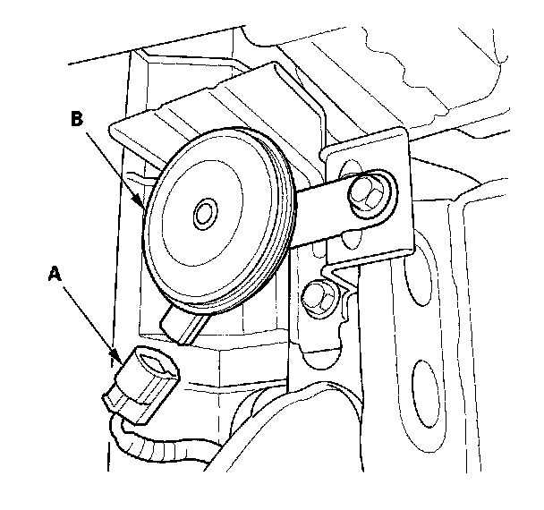
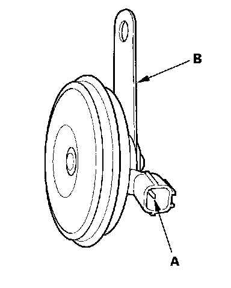

Horn Test/Replacement
Horn Test/Replacement1. Remove the front bumper.

2. Disconnect the 1P connector (A) from the horn (B)

3. Test the horn by connecting battery power to the terminal (A) and grounding the bracket (B). The horn should sound.
4. If it fails to sound, replace it.